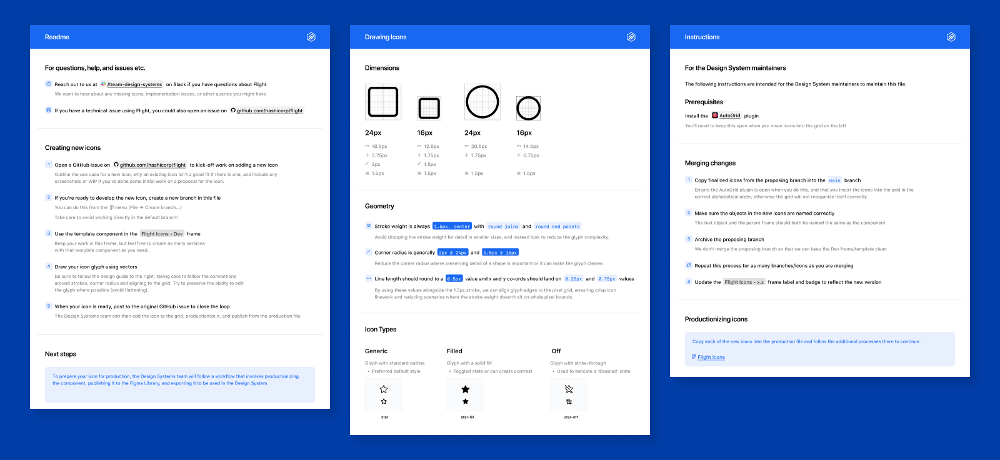
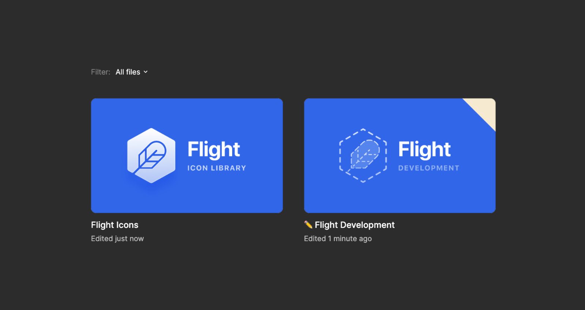
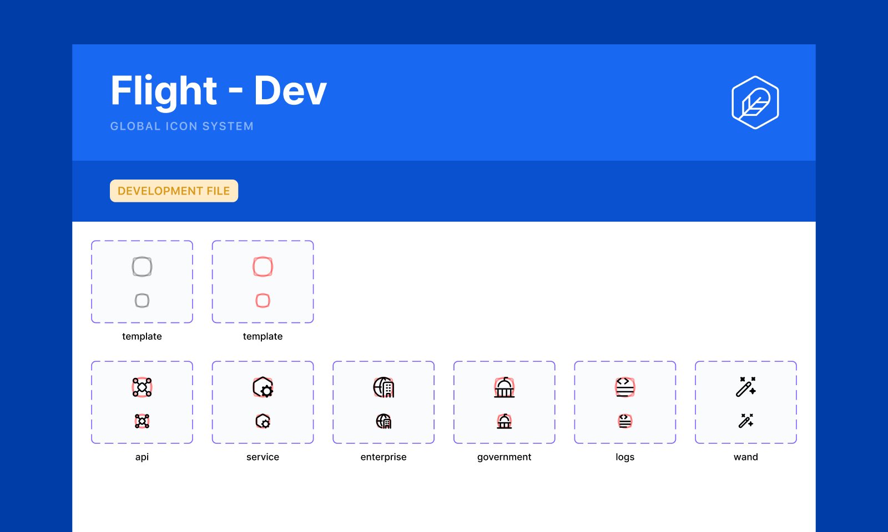
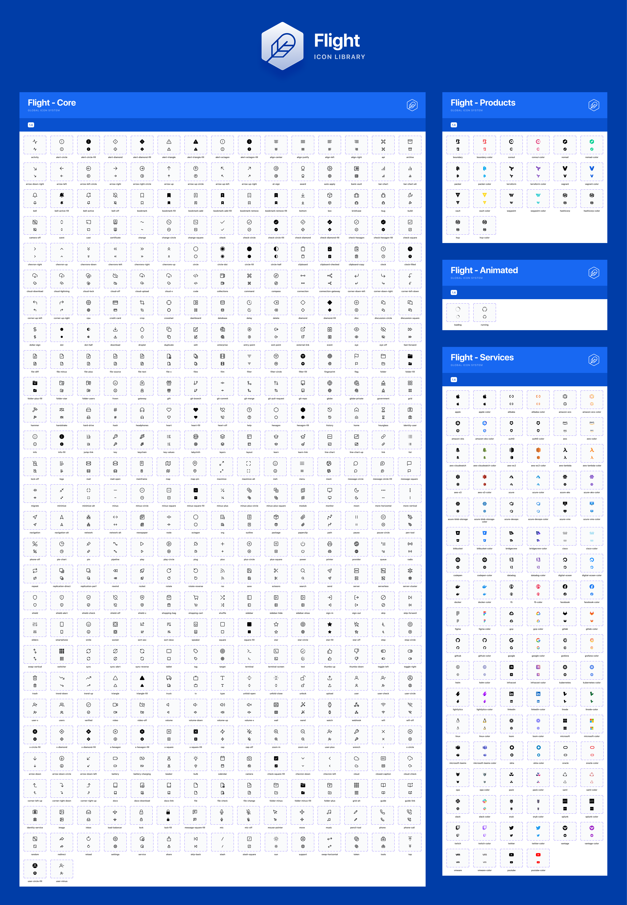
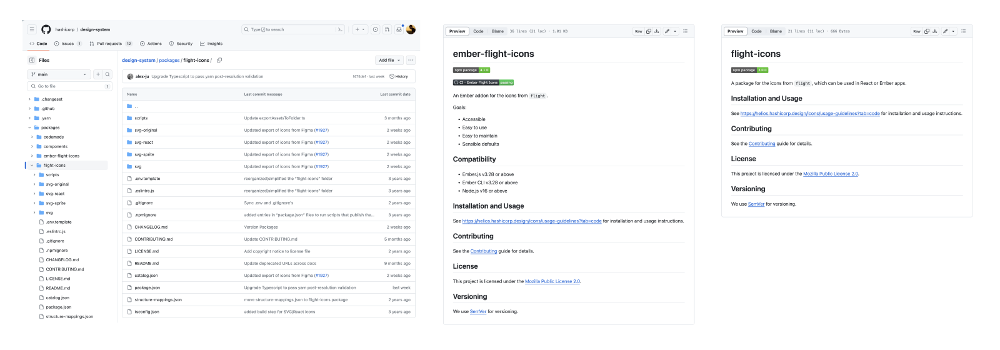
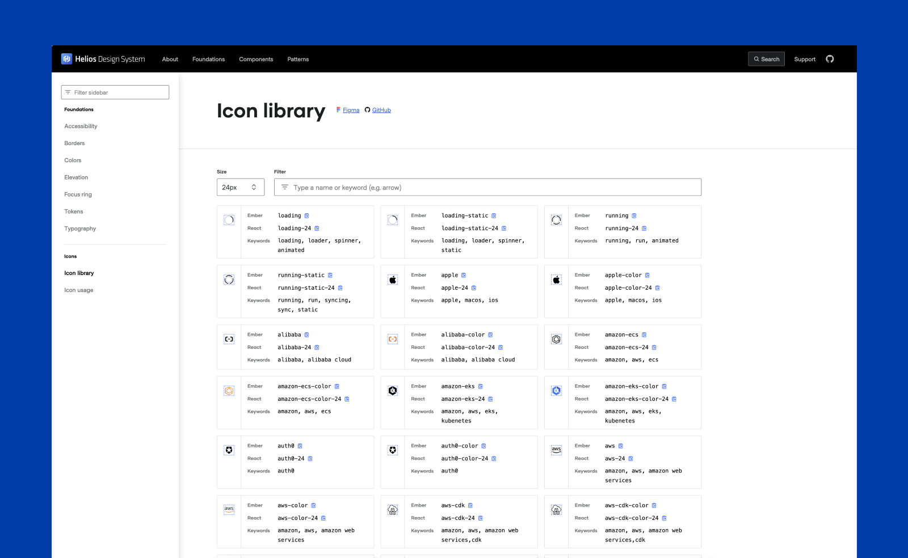

Flight Icon System
Designing icons to support a design system.

When I joined the design system core team at HashiCorp, they were working on introducing a standalone icon library. As I love designing icons and had experience working with icon systems, I quickly took ownership of the library.
Workflow
We leveraged Figma's REST API to create a script that fetches the icons from the published Figma file, then transforms them into SVGs, making them as easy to consume for engineers as they are for designers, while keeping them in sync.

Icon creation
To ensure consistency across icons, we established some high-level design guidelines and a process for drawing, adding, and publishing new icons.
Since our script loops over each icon or element present in the library file during the build process, I have a separate development file where the icon creation happens. Once an icon has been made, reviewed, approved, and is ready to be added to the library, I add a flattened and optimized version to the production file and keep the original in the development file for future reference or updates.
 Figma library
The Figma library publishes two sizes of each icon, following a consistent naming convention and categorized into three different categories: Core, Product, Services, and Animated.
Code library
We automated the build process and used GitHub actions to run our script. Then, I open a pull request, which is then merged and released.
Once a new package is available, the new icons are added to the icon section of the documentation website.
